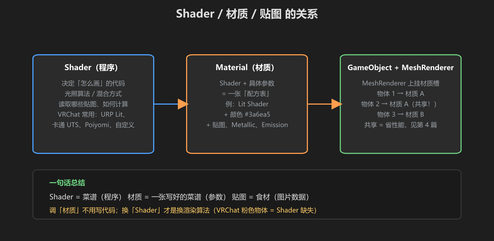
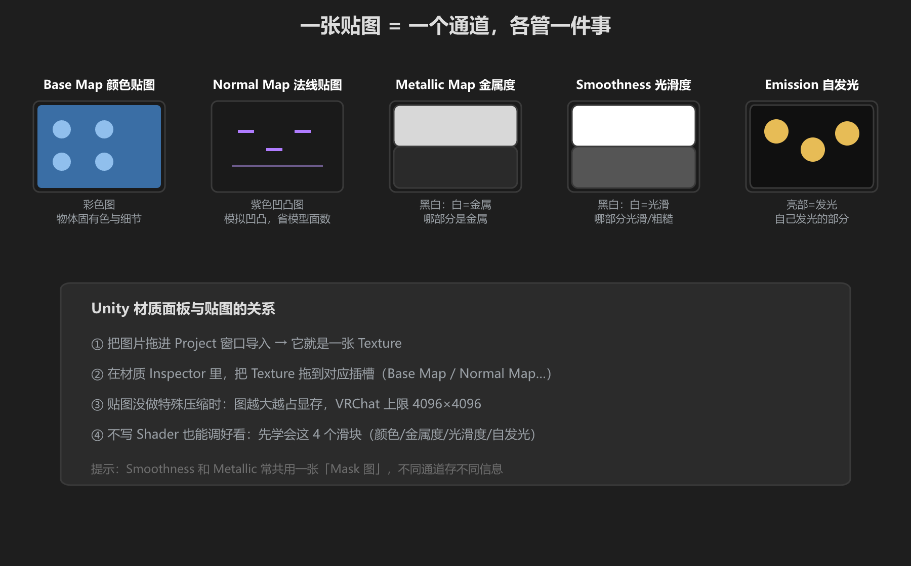
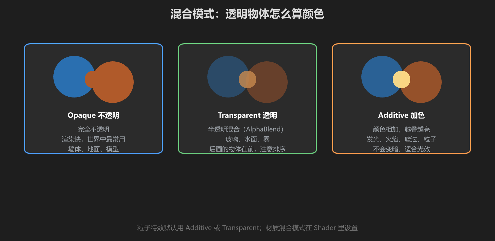

第 3 篇：材质与 Shader — 让物体长对样子
上一篇讲的是「光」，这一篇讲「物体怎么回应光」。核心三件套：Shader、材质（Material）、贴图（Texture）。
1. 三者是什么关系

图：Shader = 菜谱（程序），材质 = 写好的菜谱（参数），贴图 = 食材（图片）
| 概念 | 是什么 | 谁在用 |
|---|---|---|
| Shader | 一段 GPU 程序，决定「怎么画」：光照算法、贴图采样、混合方式 | 材质 |
| 材质 Material | Shader + 一组具体参数（颜色、贴图、Metallic…） | 物体的 MeshRenderer |
| 贴图 Texture | 一张图片数据（固有色、法线、发光…） | 材质 |
在 Unity 里，你 99% 的时间在调材质（拖贴图、拉滑块），完全不用写 Shader。写 Shader 是进阶技能，第 6 篇路线图里再说。
2. 创建你的第一个材质
- Project 窗口右键 →
Create→Material，命名MAT_Wall - 选中它，Inspector 顶部的 Shader 下拉框选择
Universal Render Pipeline/Lit（VRChat 世界必须用 URP 的 Shader！） - 把材质拖到场景里一个物体的 MeshRenderer 的 Element 0 上
- 试着调：Base Map 的颜色、Metallic、Smoothness、Emission
VRChat 死亡陷阱：从 Asset Store / 旧项目拿来的材质，Shader 可能是老的 Standard 或自定义 Shader —— 在 VRChat 里会显示成粉色/紫黑色。解决办法：重设 Shader 为 URP/Lit，再重新拖贴图。
3. 贴图的五大通道
一张贴图 = 一个通道 = 只管一件事。让它们各司其职：

图：Albedo（颜色）、Normal（凹凸）、Metallic（金属）、Smoothness（光滑）、Emission（发光）
- Base Map：固有色贴图，决定物体长什么样。最常见。
- Normal Map：紫色调贴图，假装有凹凸。石头、砖墙必备，能省大量模型面数。
- Metallic / Smoothness：黑白贴图，白 = 金属/光滑，黑 = 非金属/粗糙。
- Emission：发光贴图，亮的地方就是发光的地方。水晶、屏幕用。
没有贴图也能做材质：直接调 Base Map 颜色 + Metallic/Smoothness 滑块，很多风格化世界就是这么做的。
4. 混合模式：透明物体怎么算颜色

图：不透明、半透明、加色 — 三种混合模式叠加结果
| 模式 | 原理 | 用途 |
|---|---|---|
| Opaque | 完全不透明 | 墙体、地面、模型（默认，最快） |
| Transparent | alpha 混合：后画的物体叠在前面的上面 | 玻璃、水面、雾、半透明窗帘 |
| Additive | 颜色相加：越叠越亮 | 发光、火焰、魔法、粒子 |
性能提醒：Transparent/Additive 不能合批，还会打乱绘制顺序。能用 Opaque 就不用透明，尤其大面积物体。
5. VRChat 世界常用 Shader 一览
| Shader | 风格 | 适合 |
|---|---|---|
| URP/Lit | 写实 PBR | 默认首选，Unity 自带 |
| URP/Simple Lit | 简化光照 | 性能紧张的移动端/低配 |
| UTS3（UnityChan Toon） | 卡通三渲二 | 动漫风格世界 |
| Poiyomi Toon | 卡通 + 特效集成 | Avatar 常用，世界也可用 |
| 自定义 Shader | 任意 | 进阶玩法，第 6 篇路线图 |
学前检查清单
- 创建了一个 URP/Lit 材质并挂到物体上
- 调过颜色、Metallic、Smoothness，理解它们的作用
- 理解 Shader / 材质 / 贴图三者的关系
- 知道 VRChat 里粉色物体 = Shader 缺失或不对